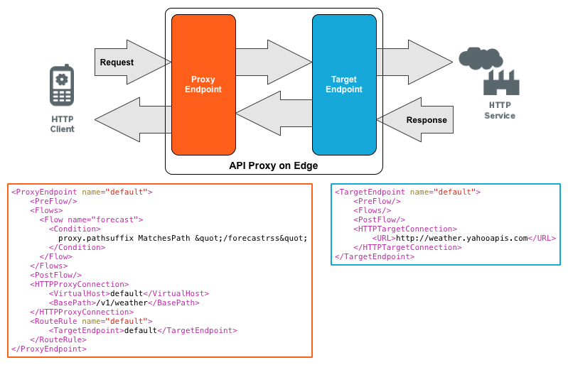

When you make a request to an API proxy, you can pass any or all of the following information, depending on the way the API proxy is configured:
By default, all data in a request is passed unchanged from the ProxyEndpoint to the TargetEndpoint. Therefore, when the TargetEndpoint makes the request to the backend server, all information in the original request is passed to the backend service.
The same is true for the response received by Edge from the backend service. By default, all data received in the response is passed unchanged to the app that originated the request.
The following image shows an API proxy definition:

For this API proxy:
A client app then makes a GET request to the API proxy by using the following cURL command:
curl -X GET http://myOrg-prod.apigee.net/v1/weather/forecastrss?w=12797282
Notice that this request contains the resource "forecastrss" and one query param, "w". Edge parses the request as shown below and assigns parts of the request to flow variables:
{request.verb} {proxy.basepath}/{proxy.pathsuffix}?{request.querystring}
The flow variables are set with the following values:
request.verb: GET
proxy.basepath: /v1/weather
proxy.pathsuffix: forecastrss
request.querystring: w=12797282
There are many different flow variables created during the processing of a request and response. See http://docs.apigee.com/node/243 for more.
The TargetEndpoint then makes a request to the backend service using information from the request:
{request.verb} {target.basepath}/{proxy.pathsuffix}?{request.querystring}
Notice how the resource and query params specified in the request are automatically included in the request to the backend server. From the definition of the TargetEndpoint, the request then has the form:
curl -X GET http://weather.yahooapis.com/forecastrss?w=12797282
Like query params, any headers or form params that you include in the request to the API proxy are passed on to the backend server. For example, you make the request below that includes a header:
curl -X GET -H 'Content-type:application/xml' http://myOrg-prod.apigee.net/v1/weather/forecastrss?w=12797282
Or a request in the form below to include a header and form data:
curl -X POST -H "Content-type:application/json" -d \
'{"email" : "janetutorialxml@example.com",
"firstName" : "Jane",
"lastName" : "Tutorial",
"userName" : "jtutorialxml"
}' \
http://myOrg-prod.apigee.net/v1/register/user
In both examples, the headers and form data are passed unchanged to the backend service. The headers are represented by flow variables such as request.headers.count and request.headers.names. The form data is represented by flow variables such as request.formparam.count and request.formparam.names.
By default, all data received by Edge from the backend service in the response is passed unchanged to the app that originated the request. As described above for the request, the data returned in the response is accessible through flow variables on Edge. See http://docs.apigee.com/node/243 for more.
There are many times where you want to modify request data before sending it to the backend server. For example:
The same is true for data in the response. As part of processing the response, the API proxy might want to modify the data before returning it to the requesting app.
Edge defines several policies that you can use to process the request and response data. These policies include: